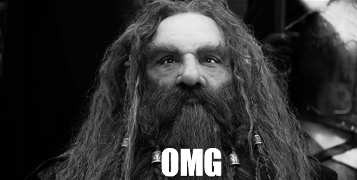

Your adventure begins...

It's a Friday night and after a long week of farming you pop into the Green Dragon for a pint. You see Frodo Baggins, Samwise Gamgee, Pippin Took and Merry Brandybuck sitting at a table and join them. They're talking about an adventure they're going on to Rivendell and ask if you would like to join them. You think about it for a minute, it has been awhile since you've left the Shire, but at the same time, why would you ever want to leave the Shire? What do you do?

You arrive in Rivendell and gasp in awe of how beautiful it is. The elves are so kind, and the food, while lacking meat, is delicious. There is also a never-ending supply of wine. A council is held for the fate of the Ring and the Fellowship of the Ring is formed to take it Mordor and destroy it at Mount Doom. Do you join the Fellowship and save Middle Earth? Or do you stay in Rivendell and enjoy the company of elves?

You made it safely through the mines of Moria, but are mourning the loss of your friend and mentor, Gandalf. You want a day to rest and pay your respect but Aragorn makes the group continue moving. Even though the group is moving fast, a deadly group of Uruk-hai arrive and attack. You see Frodo run to the boats and Sam following, while Merry and Pippin are being kidnapped by the Uruk-hai. Do you follow Sam and Frodo? Fight for Merry and Pippin? Or fight with Aragorn?
You, Frodo and Sam have spent over a day walking in the same circle trying to find the right road to Mordor. You're hungry, frustrated, and don't know the fate of your other friends. You hear some branches break behind you and watch as Sam captures Gollum, a horrible little creature who has been following you for days. He begs for mercy and promises to take you to Mount Doom to destroy the ring. You know that he was the original ring bearer and he would do anything to get it back, but on the other hand, he does know the way to Mordor and it is 3 vs 1. What do you do?
Gollum gleefully leads you to Mordor, awkwardly talking to himself when he thinks you're not listening. The four of you are found and taken by men of Gondor, one who turns out to be Boromir's brother, Faramir. While fighting off an attack from Nazgul, Faramir tries to take the Ring from Frodo but you tell him how it drove his brother mad. He allows you to go free, but warns Gollum not to play tricks. Do you try to ditch Gollum again? Or continue to follow him?
Gollum tricks Frodo into abandoning Sam, and then he leaves the two of. You end up in a dark cave and hear something behind you. As you turn around you see Frodo frothing at the mouth and a large spider wrapping him in her web. Panic fills you as Shelob takes Frodo and comes back for you. You want to run away when suddenly you see Sam running towards you. Do you turn the other way and hope to escape, or fight with Sam?
You and Sam fight to kill Shelob, but when you go to check on Frodo, you realize he's dead. You both decide to take the Ring and his sword, Sting, to finish the journey you started. You hear a noise and hide behind rocks, and you see a couple of Orcs. They see Frodo wrapped in Shelob's web, say he's just been knocked out and take him. You and Sam look at each other. Do you follow Frodo? Or continue on your quest to get rid of the Ring?

You and Sam rescue Frodo and the three of you fight hunger and thirst to climb up Mount Doom and are just 20 feet away from the volcanic fire. Frodo suddenly turns and claims the Ring for his own. Gollum shows up and attacks Frodo for the Ring. As the two wrestle around, the Ring falls to the ground in front of you. As you pick it up to throw into the lava, you suddenly hear someone whisper your name and feel a great surge of power run through you. The voice promises you great power and respect. All you have to do is put the Ring on and become invisible. What do you do?

As Merry and Pippin are being carried away by Orcs, Aragorn closes Boromir's eyes and you, Legolas, Gimli and Aragorn lay him in a boat to go over the Falls of Rauros. Gimli wants to follow after Frodo and Sam, but Aragorn says Merry and Pippin must be rescued. The group decides to rescue Merry and Pippin. You want to save your friends but you're so exhausted, mentally and physically. Do you turn back to return to your home? Or do you join you friends?
Legolas is tracking Merry and Pippin when the four of you are approached by the Riders of Rohirrim, the army of Rohan. They tell you they slaughtered a group of Uruk-hai the night before and left no one alive, which means Merry and Pippin as well. They give you horses and you ride to the battle site. You learn that Merry and Pippin are alive, and you meet Gandalf again! But this time he is Gandalf the White. He takes you to Rohan where he stops the king from being possessed and tells Rohan they need to prepare for war against Saruman. The king doesn't want to fight, but instead take cover in Helms Deep. Do you agree with the king? Or believe you need to get an army ready?
You fought the battle of Helms Deep and came out alive. Now you must gather armies of Men to fight the battle against Sauron. You, Aragorn, Gimli, Legolas and warriors of Rohan set out for another battle. Elrond, elf king and father of Arwen, comes to tell Aragorn that Arwen is dying and gives him a sword forged from Narsil. This was the sword that Isilidur, Aragorn's forefather, used to cut off the Ring from Sauron. Elrond tells Aragorn he must take the Path of the Dead if he wants to defeat the Corsair army. Do you join Aragorn, Legolas and Gimli to recruit the Army of the Dead? Or stay with King Theoden and the army of Rohan?
You've done it! You helped Aragorn recruit the Army of the Dead and defeat the Corsair army winning the battle taking place. You think it's all over until Aragorn says they must create a distraction at the Black Gate in hopes of helping Frodo and Sam get to Mount Doom. Another battle. And this time surely death as you will be outnumbered. Do you stay in Gondor to avoid this suicide-wish? Or fight till the end to save Middle Earth?
You watch as the Ring flies over the edge and Gollum falls after it. You and Sam pick up the badly beaten Frodo and run for your lives out of the cave while it collapses. As the eagles come to save you, a peace and calm finally fills you, knowing you saved Middle Earth. Congratulations! You did it!

You fall down while fighting with an orc. You see his sword rise above you, and as you anticipate it coming down the earth shakes and the Eye of Sauron is looking every where in panic. The ground starts to split and you realize it's been done. Frodo and Sam succeeded! Middle Earth is saved and it's all thanks to you! Congratulations!